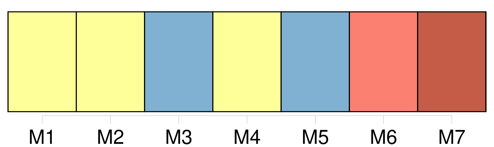
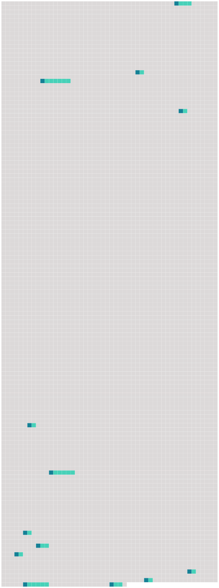

Longueur nb maillons : 13 mentions |
 |
Convenablement décrassée et restaurée, la statue eût laissé voir le style florentin de la Renaissance à la manière des sculpteurs italiens venus en France à la suite de maître Roux ou du Primatice, époque probable des splendeurs de [la famille maintenant déchue] [18 phrases] Toutes portaient à leur angle le blason de [la famille] et l'âge du personnage représenté ; mais, que le chiffre fût bas ou élevé, il n'existait pas une différence bien appréciable entre ces têtes aux lumières jaunes, aux ombres carbonisées, enfumées de vernis et saupoudrées de poussière ; deux ou trois de ces toiles chancies et couvertes d'une fleur de moisissure présentaient des tons de cadavre en décomposition, et prouvaient, de la part du dernier descendant de [ces hommes de race et d'épée] , une indifférence complète à l'endroit des effigies de ses nobles aïeux. [8 phrases]
À moins d'être un esprit, il n'eût point été prudent de s'y asseoir, et, sans doute, ces sièges ne servaient que lorsque le conciliabule des ancêtres sortis de leurs cadres venaient prendre place à la table inoccupée, et devant un souper imaginaire causaient entre eux de la décadence de [la famille] pendant les longues nuits d'hiver si favorables aux agapes de spectres. [85 phrases]
Sigognac, tout pauvre qu'il fût, était toujours à leurs yeux le seigneur, et la décadence de [cette famille] ne les frappait pas comme elle eût fait les étrangers ; et c'était cependant un spectacle assez grotesquement mélancolique que de voir passer le jeune baron dans ses vieux habits, sur son vieux cheval, accompagné de son vieux chien, comme ce chevalier de la Mort de la gravure d'Albert Dürer. [12 phrases]
D' [une famille jadis puissante et riche] il ne restait qu'un rejeton isolé, errant comme une ombre dans ce manoir peuplé par ses aïeux ; d'une livrée nombreuse il n'existait plus qu'un seul domestique, serviteur par dévouement, qui ne pouvait être remplacé ; d'une meute de trente chiens courants il ne survivait qu'un chien unique, presque aveugle et tout gris de vieillesse, et un chat noir servait d'âme au logis désert. [17 phrases] Sigognac prit sur la table un petit volume dont la reliure ternie portait estampé l'écusson de [sa famille] , et se mit à en tourner les feuilles d'un doigt nonchalant. [3 phrases] Le jeune Baron, unique survivant de [la famille Sigognac] , avait, en effet, bien des motifs de mélancolie. [1 phrases]
Les fiefs, les métairies, les fermes et les terres qui relevaient du château s'étaient envolés pièce à pièce ; et le dernier Sigognac, après des efforts inouïs pour relever la fortune de [la famille] , efforts sans résultats parce qu'il est trop tard pour boucher les voies d'eau d'un navire lorsqu'il sombre, n'avait laissé à son fils que ce castel lézardé et les quelques arpents de terre stérile qui l'entouraient ; le reste avait dû être abandonné aux créanciers et aux juifs. [3 phrases] En ce moment, il s'ennuyait si fort qu'il eût été heureux de recevoir une de ces admonestations paternelles dont le souvenir lui faisait venir les larmes aux yeux ; car un coup de pied de père à fils, c'est encore une relation humaine et, depuis quatre ans que le Baron dormait allongé sous sa dalle dans le caveau de famille [des Sigognac] , il vivait au milieu d'une solitude profonde. [3 phrases]
Aussi beaucoup de gens croyaient -ils que [les Sigognac] étaient éteints, et l'oubli, qui pousse sur les morts encore plus vite que l'herbe, effaçait [cette famille autrefois importante et riche] , et bien peu de personnes savaient qu'il existât encore un rejeton de [cette race amoindrie] |
 |
Il est possible de télécharger la ressource sur la page Ortolang |
Si vous avez des questions ou vous voyez des erreurs, merci d'envoyer un mail à silvia.federzoni89@gmail.com |